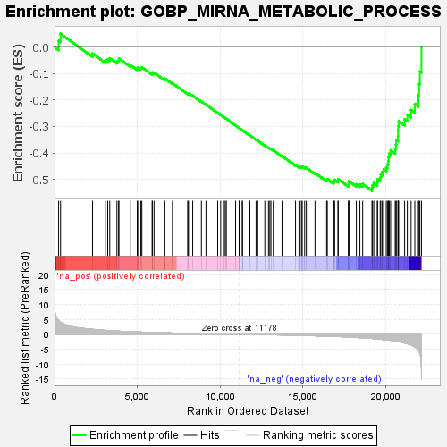
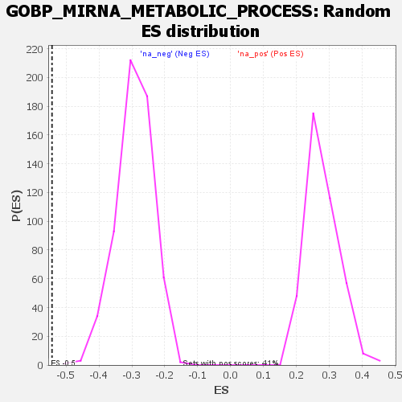

| | | Dataset | deseq_dnfgfr_res_for_gsea |
| Phenotype | NoPhenotypeAvailable |
| Upregulated in class | na_neg |
| GeneSet | GOBP_MIRNA_METABOLIC_PROCESS |
| Enrichment Score (ES) | -0.5425662 |
| Normalized Enrichment Score (NES) | -1.8581991 |
| Nominal p-value | 0.0 |
| FDR q-value | 0.068291955 |
| FWER p-Value | 0.571 |
Table: GSEA Results Summary

Fig 1: Enrichment plot: GOBP_MIRNA_METABOLIC_PROCESS
Profile of the Running ES Score & Positions of GeneSet Members on the Rank Ordered List
| SYMBOL | RANK IN GENE LIST | RANK METRIC SCORE | RUNNING ES | CORE ENRICHMENT | | 1 | Tent2 | 246 | 4.550 | 0.0245 | No |
| 2 | Tgfbr1 | 364 | 4.013 | 0.0506 | No |
| 3 | Gnl3 | 2293 | 1.625 | -0.0241 | No |
| 4 | Bmp2 | 3067 | 1.287 | -0.0490 | No |
| 5 | Myocd | 3213 | 1.231 | -0.0460 | No |
| 6 | Tead1 | 3335 | 1.193 | -0.0421 | No |
| 7 | Ppard | 3768 | 1.055 | -0.0534 | No |
| 8 | Nfib | 3872 | 1.026 | -0.0501 | No |
| 9 | Zc3h12a | 3888 | 1.021 | -0.0428 | No |
| 10 | Bmp4 | 4604 | 0.842 | -0.0686 | No |
| 11 | Lin28a | 4996 | 0.751 | -0.0804 | No |
| 12 | Nfatc4 | 5027 | 0.744 | -0.0760 | No |
| 13 | Klf4 | 5216 | 0.705 | -0.0790 | No |
| 14 | Pnpt1 | 5273 | 0.693 | -0.0761 | No |
| 15 | Smad1 | 5900 | 0.573 | -0.1000 | No |
| 16 | Prl8a6 | 5903 | 0.573 | -0.0956 | No |
| 17 | Pdgfb | 6011 | 0.555 | -0.0961 | No |
| 18 | App | 6649 | 0.458 | -0.1213 | No |
| 19 | Atoh8 | 6651 | 0.458 | -0.1178 | No |
| 20 | Gata2 | 7119 | 0.391 | -0.1359 | No |
| 21 | Yy1 | 8045 | 0.276 | -0.1757 | No |
| 22 | Bmpr1a | 8062 | 0.274 | -0.1742 | No |
| 23 | Pparg | 8161 | 0.258 | -0.1767 | No |
| 24 | Gata6 | 8345 | 0.236 | -0.1831 | No |
| 25 | Tgfb2 | 8869 | 0.170 | -0.2055 | No |
| 26 | Prl8a2 | 9145 | 0.143 | -0.2168 | No |
| 27 | Hif1a | 9853 | 0.076 | -0.2483 | No |
| 28 | Sox9 | 10034 | 0.058 | -0.2560 | No |
| 29 | Drosha | 10254 | 0.036 | -0.2656 | No |
| 30 | Stat3 | 10315 | 0.031 | -0.2681 | No |
| 31 | Nr3c1 | 10377 | 0.027 | -0.2706 | No |
| 32 | Prl2c1 | 10936 | 0.004 | -0.2959 | No |
| 33 | Hdac2 | 11155 | 0.003 | -0.3057 | No |
| 34 | Rara | 11157 | 0.003 | -0.3058 | No |
| 35 | Tent4b | 11341 | -0.017 | -0.3139 | No |
| 36 | Ctcf | 11349 | -0.017 | -0.3141 | No |
| 37 | Bcdin3d | 11798 | -0.066 | -0.3339 | No |
| 38 | Prl | 12171 | -0.105 | -0.3499 | No |
| 39 | Prl5a1 | 12273 | -0.105 | -0.3537 | No |
| 40 | Nfatc3 | 12700 | -0.135 | -0.3719 | No |
| 41 | Mrtfb | 12922 | -0.159 | -0.3807 | No |
| 42 | Trim71 | 13003 | -0.168 | -0.3830 | No |
| 43 | Parn | 13070 | -0.177 | -0.3846 | No |
| 44 | Tgfb1 | 13213 | -0.193 | -0.3895 | No |
| 45 | Snd1 | 13739 | -0.241 | -0.4114 | No |
| 46 | Gata3 | 14555 | -0.350 | -0.4456 | No |
| 47 | Srebf1 | 14763 | -0.372 | -0.4521 | No |
| 48 | Ngfr | 14829 | -0.383 | -0.4520 | No |
| 49 | Wt1 | 14917 | -0.397 | -0.4529 | No |
| 50 | Fosl1 | 14960 | -0.404 | -0.4516 | No |
| 51 | Hdac4 | 15107 | -0.428 | -0.4549 | No |
| 52 | Rela | 15208 | -0.442 | -0.4560 | No |
| 53 | Smad3 | 15731 | -0.524 | -0.4755 | No |
| 54 | Smad4 | 16433 | -0.643 | -0.5022 | No |
| 55 | Jun | 16475 | -0.651 | -0.4990 | No |
| 56 | Myc | 16858 | -0.724 | -0.5107 | No |
| 57 | Dicer1 | 16897 | -0.731 | -0.5067 | No |
| 58 | Rc3h1 | 16913 | -0.734 | -0.5016 | No |
| 59 | Ago4 | 17119 | -0.779 | -0.5048 | No |
| 60 | Ets1 | 17133 | -0.781 | -0.4993 | No |
| 61 | Trp53 | 17757 | -0.936 | -0.5202 | No |
| 62 | Tut7 | 17758 | -0.936 | -0.5128 | No |
| 63 | Il10 | 17778 | -0.941 | -0.5063 | No |
| 64 | Rest | 18228 | -1.069 | -0.5183 | No |
| 65 | Nfkb1 | 18443 | -1.143 | -0.5191 | No |
| 66 | Ddx5 | 18611 | -1.200 | -0.5172 | No |
| 67 | Hras | 19171 | -1.415 | -0.5315 | Yes |
| 68 | Dis3l2 | 19206 | -1.427 | -0.5219 | Yes |
| 69 | Tut4 | 19283 | -1.466 | -0.5138 | Yes |
| 70 | Rc3h2 | 19493 | -1.566 | -0.5110 | Yes |
| 71 | Nr1h2 | 19513 | -1.580 | -0.4995 | Yes |
| 72 | Spi1 | 19668 | -1.668 | -0.4935 | Yes |
| 73 | Tert | 19703 | -1.683 | -0.4818 | Yes |
| 74 | Zfp512b | 19783 | -1.727 | -0.4719 | Yes |
| 75 | Ago1 | 19875 | -1.783 | -0.4621 | Yes |
| 76 | Ago2 | 20035 | -1.863 | -0.4547 | Yes |
| 77 | Carlr | 20106 | -1.906 | -0.4430 | Yes |
| 78 | Egr1 | 20160 | -1.933 | -0.4302 | Yes |
| 79 | Mir744 | 20180 | -1.944 | -0.4159 | Yes |
| 80 | Smarca4 | 20217 | -1.971 | -0.4021 | Yes |
| 81 | Ppara | 20299 | -2.024 | -0.3899 | Yes |
| 82 | Klf5 | 20574 | -2.277 | -0.3845 | Yes |
| 83 | Lilrb4a | 20620 | -2.322 | -0.3684 | Yes |
| 84 | Tnf | 20638 | -2.338 | -0.3509 | Yes |
| 85 | Lin28b | 20748 | -2.464 | -0.3365 | Yes |
| 86 | Mrtfa | 20751 | -2.465 | -0.3173 | Yes |
| 87 | Fos | 20757 | -2.477 | -0.2982 | Yes |
| 88 | Khsrp | 20786 | -2.506 | -0.2798 | Yes |
| 89 | Apln | 21144 | -2.943 | -0.2730 | Yes |
| 90 | Srebf2 | 21308 | -3.183 | -0.2554 | Yes |
| 91 | Foxo3 | 21535 | -3.586 | -0.2376 | Yes |
| 92 | Smad6 | 21759 | -4.234 | -0.2146 | Yes |
| 93 | Srf | 21976 | -5.352 | -0.1825 | Yes |
| 94 | Ddx17 | 22018 | -5.745 | -0.1394 | Yes |
| 95 | Mir3960 | 22063 | -6.281 | -0.0922 | Yes |
| 96 | Zswim8 | 22161 | -12.364 | 0.0001 | Yes |
Table: GSEA details [plain text format]

Fig 2: GOBP_MIRNA_METABOLIC_PROCESS: Random ES distribution
Gene set null distribution of ES for GOBP_MIRNA_METABOLIC_PROCESS